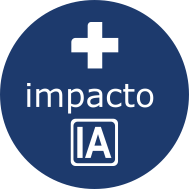

Deslizá y mirá cómo resolverlo.
“La IA es para empresas grandes y técnicas.”
RealidadLa implementación la hacemos nosotros. Se conecta por API a tu sistema de gestión actual.
Caso Cardiología Hiskin · abril de 2026
Escribinos por WhatsApp y te decimos qué Empleado IA conviene poner a trabajar primero.
masimpactoia.com · @masimpacto_ia